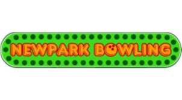

WHO I AM
personal statement
My name is Xavier Ibáñez Barrios and I am from Spain. I am sure you are now thinking about what is that letter: "ñ", and how it sounds.
Well, this is one of the 27 letters of the spanish alphabet and it is as important as the other 26. There are a lot of words containing it,
for example: 'Spain' in spanish is 'España', 'chestnut' in spanish is 'castaña' or 'mountain' in spanish is 'montaña'.
As you can see, my first surname contains the 'ñ' sound and I supouse that it is the reason why all people who talk in english
prefer to use my second surname rather than my first, the 'ñ' scares them.
In Spain is said that surnames ended with "-ez" mean "son of" so Ibáñez means "Iban's son". There are a lot of common spanish surnames of this style like "González" that means "Gonzalo's son" or "Fernández" that means "Fernando's son". But if you go to spain
and ask about "Ibáñez" surname to someone, it is certain that most of people will say to you something like "Ibáñez is the Mortadelo & Filemon creator!".
I have more things in common with Francisco Ibáñez than the surname, I am as crazy as his creations and I was born in Barcelona as well.
What can I say about my own city Barcelona? It is an awesome beautiful city, It has the sea at the front and two marvelous mountains in the back. The weather is Mediterranean so it is perfect
for walking both day and night, winter and summer. There are a lot of interesting turistic sites you may visit, and you can also taste all the typical spanish food anywhere you go.
I think in the end I have not talked much about me but if you are interested in getting to know me more thoroughly, you can contact with me via the links available on the top of this webpage.
WHAT I'VE DONE
my experiences
Life is meant to be enjoyed so one way to reach that goal is finding a job you enjoy as well.
I am fortunate to be able to say that I have worked in two nice jobs along my life.
DATES: (06/2007 - 09/2007)
COMPANY: Henkel Iberica S.A
POSITION COVERED: Warehouse assistant.
TASKS DONE:
- Take care of delivery notes and invoices.
- Manage articles inputs and outputs.
- Do inventory.
- Solve order issues.
- Material distribution and organization.
- Special package preparation.

DATES: (09/2011 - 09/2012)
COMPANY: Newpark bowling
POSITION COVERED: Hall staff.
TASKS DONE:
- Take care of the arcade machines.
- Help and solve clients issues.
- Change game tickets for prizes.
- Bowling zone maintenance and tracks allocation.
- Serve in bar zone.
- Organize several events.
WHAT I KNOW
my skills
Knowledge is something that needs to be feeded along life. Nobody is born knowing what he knows when he dies, and I am not a special case.
I have been studying a lot of years in order to learn about things that seem interesting to me, so at that point in my life, I can list them as follows:
- C, C++, C# programming.
- Java programming.
- x86 assembler programming.
- Conscious programming regarding the arquitecture (Intel processors)
- Electronic circuits design.
- Embedded systems solutions.
- PIC and Arduino programming.
- Operative systems based on UNIX.
- UNIX operative systems administration.
- Multiprocessors protocols.
- Network protocols (TCP/IP, UDP, OSPF, BGP, STP, MPLS).
- Uniprocessors design.
- Basic Web Design (HTML5, CSS3, JavaScript).
- Basic computer forensics.
WHAT I'VE LEARNED
my education
Nowadays the work experience is underestimated, you are more important for the titles you have than for what you really know.
I do not have a lot of titles, but I hope to have more in the future. "Hope is the last thing you lose".
- (2005 - 2007) Technological science at A levels. (Centre d'estudis Roca ,Barcelona)
- (2005 - 2007) C1 DGPL Catalan language certificate. (Centre d'estudis Roca, Barcelona)
- (2008 - 2009) PET Cambridge University English language certificate. (Oficial language school, Barcelona)
- (2012 - current) Bachelor degree in computer science, specialized in computer architecture.(Politechnic University of Barcelona(UPC))
WHAT I LIKE
hobbies & interests
There are a lot of things that I enjoy but many of them are beyond the reach of my hand (at least for the moment), like drive a train or look at the Earth from space.
Because that, I am compelled to list the following ones (they are less thrilling but more common):
- Play cards in the university bar.
- Drive a car during the nigth.
- Dissasemble things to see how they are made.
- Design and make circuits.
- Make mobile phone applications.
- Spend time with my year and a half nephew.
- Listen to music and dance it if nobody is looking at me.
- Improve my culinary techniques in the kichen.
- Eating with my grandmothers (they cook delicious food).
- Make garden works (if the day is sunny).
- Ride bike over the mountain (if the day is sunny as well).
- And maybe... ...do Rich Web Application homework...